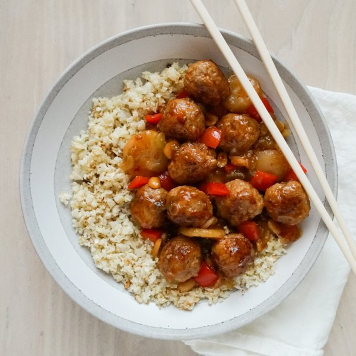

"Kung Pao" Pork Meatballs with Peppers, Peanuts & Cauliflower Rice

Total Time
40 min
Nutrition (Per Serving)
658.3 kcalCalories
39 gProtein
34.3 gCarbs
42.1 gFat
Full nutrition table
| Calories | 658.3 kcal |
| Total fat | 42.1 g |
| Saturated fat | 10.7 g |
| Trans fat | 0.2 g |
| Cholesterol | 115.7 mg |
| Sodium | 244.4 mg |
| Carbohydrates | 34.3 g |
| Fiber | 7.2 g |
| Sugars | 11.7 g |
| Protein | 39 g |
| Potassium | 1271.9 mg |
| Calcium | 121.4 mg |
| Iron | 3.6 mg |
| Vitamin A | 421 IU |
| Vitamin C | 118.1 mg |
| Vitamin D | 28.9 IU |
Cookware
Ingredients
- 1 medium headcauliflower
- 2 stickscelery
- 2 (1 inch) piecesginger root
- 1 small bunchgreen onions (scallions)
- 1 ½ lblean ground pork
- ¼ cuppeanuts, roasted unsalted
- 1red bell pepper
- 4 ozwater chestnuts
- brown sugar
- chili-garlic sauce
- cornstarch
- panko bread crumbs
- rice vinegar
- salt
- soy sauce
- toasted sesame oil
Steps
- Preheat oven to 425°F.
- Wash and dry the fresh produce.1 medium head cauliflower
2 (1 inch) pieces ginger root
1 small bunch green onions (scallions)
1 red bell pepper
2 sticks celery - Cut cauliflower head into quarters; using a box grater, hold the stem end of the cauliflower and coarsely grate. (Alternatively, transfer cauliflower to the bowl of a food processor; pulse until rice-like in consistency.) Place in a medium bowl.
- Add oil and salt to the bowl with the cauliflower rice, then stir to combine. Transfer to a large baking sheet pan and spread out in an even layer. (Reserve bowl for later use.)2 tsp toasted sesame oil
½ tsp salt - Place baking sheet in the oven (it doesn't have to be fully heated) and roast, stirring cauliflower halfway through, until rice is tender and golden, 15-18 minutes. Remove from oven.
- Meanwhile, peel and mince ginger. Place in the reserved bowl along with pork, bread crumbs, chili-garlic sauce, and salt; using your hands, mix well to combine.1 ½ lb lean ground pork
½ cup panko bread crumbs
2 tbsp chili-garlic sauce
1 tsp salt - Using a tablespoon measure, form the pork mixture into rounded meatballs and place on a plate.
- Preheat a large skillet over medium-high heat.
- While the skillet heats up, trim and cut green onions crosswise into thin pieces. Place in a clean medium bowl and set aside.
- Once the skillet is hot, add oil and swirl to coat the bottom; add meatballs and cook, turning occasionally, until golden brown and cooked through, 6-8 minutes. Transfer to a clean plate. (Reserve skillet for later use.)4 tsp toasted sesame oil
- While the meatballs are cooking, trim, seed, and medium dice bell pepper. Trim and thinly slice celery crosswise. Add both to the bowl with the green onions.
- Drain and rinse water chestnuts. Add to the bowl.4 oz water chestnuts
- Return skillet to medium-high heat, add more oil, and swirl to coat the bottom. Add veggies, water chestnuts, and peanuts; stir-fry until veggies are tender-crisp, 3-4 minutes.2 tsp toasted sesame oil
¼ cup peanuts, roasted unsalted - Meanwhile, place water, vinegar, soy sauce, chili-garlic sauce, cornstarch, and sugar in a small bowl. Stir to combine the sauce.⅔ cup water
2 tbsp rice vinegar
2 tbsp soy sauce
4 tsp chili-garlic sauce
4 tsp cornstarch
4 tsp brown sugar - Return meatballs to the skillet along with the sauce. Bring to a boil and cook, stirring frequently, until sauce has thickened and meatballs are warmed through, about 1 minute. Remove from heat.
- To serve, divide cauliflower rice, meatballs, veggies, and sauce between plates or bowls. Enjoy!